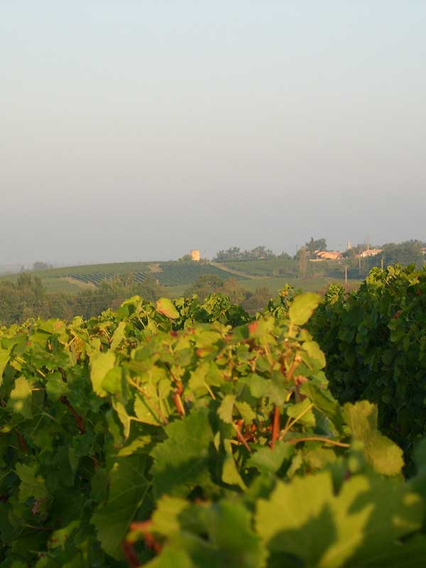
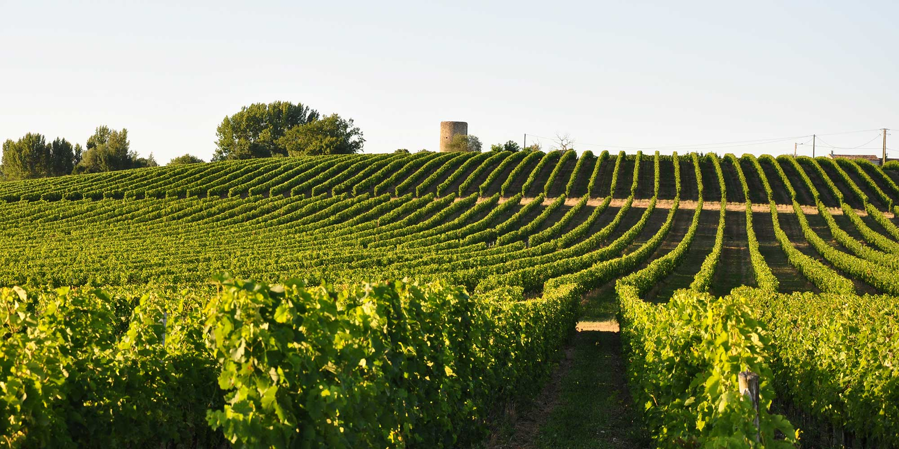
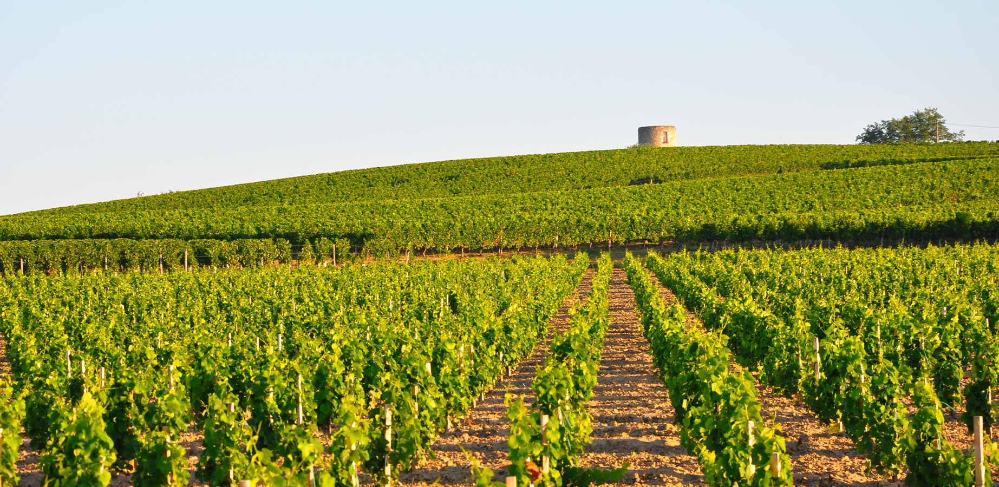

Vineyard
A generous terroir

A privileged location
Of the estate’s hundred or so family-owned hectares, the vineyard covers 70 hectares of the most outstanding terroirs, on hillsides overlooking the Gironde estuary. On the remaining 35 hectares, we take care to maintain a reserve of natural areas: scrubland, meadows and coppices that help preserve biodiversity among our vines.
The vines benefit from a microclimate created by the proximity of the estuary and the south and south-west exposure of the slopes, at an altitude of 65 to 100 metres. This setting protects the vineyard from spring frosts and autumn fogs.

A generous terroir
The clay gravels that cap the hillsides are ideal ground for the black grape varieties Cabernet Sauvignon, Cabernet Franc and Malbec. On the hillsides, the clay-limestone soils and silts are home to the Merlots.
The white varieties, Sauvignon and Colombard, thrive in the well-drained sands at the foot of the slopes.

Responsible winegrowing
With a density of 5,000 vines per hectare, the average age of our vines is 30 years, and the old vines are more than 50 years old. The estate is committed to environmentally friendly winegrowing.
The combination of terroir, climate and our work as winegrowers allows us to offer you wines of great authenticity.